NBIS SMS Checklist Guide
Purpose
The purpose of NBIS SMS (short- and medium-term support) Checklist is
to be a tool that helps to go through the main points of data management
strategies for the support project, as well as provide the NBIS Data Steward with
sufficient information to be able to assist with data management issues in
general and specifically with data publication.
The Checklist is divided into two parts, Phase 1 and Phase 2, to be walked-through
at separate occasions:
- Phase 1 - At the time of the first meeting between NBIS Bioinformatician and the Research group, before the contract is signed.
- Phase 2 - At a start-up data management meeting, between the Research group, NBIS Data Steward and Bioinformatician, when the project starts.
Note: This demo is NOT for creating a data management plan, for that purpose please go to Guide - Write a DMP instead.
Contents
- Get started
- Orientation
- Fill the checklist
- Add a TODO
- Create a document file
- How to collaborate
- Outdated project
- Create a copy
- Get help
Get started
- Click on
Projectsin left-hand margin - Click on
Createin top right corner, name the project <Redmine number>_<short project name>, select the project template namedSMS Checklist Templateand click onSave
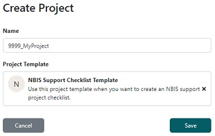
Back to TopOrientation
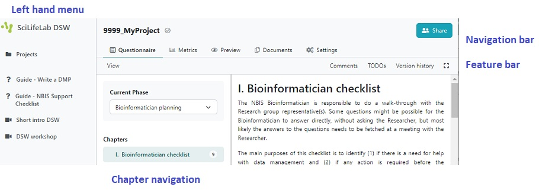
- The menu on the left-hand margin is the top level menu of the tool, with Guide links and where you can find all your projects
- In the top of the page, there is a navigation bar with tabs that allows you to
shift between different views of the current project
Questionnaireis where you answer the questionsMetricsshow statistics of questions answered (not applicable)Previewdisplay the output documentDocumentsis where you create and download output documentSettingsis where you select format for the output document
- Directly under the navigation bar is a feature bar with:
Viewshow or hide tags, phases, and/or authors under questionsTODOsshow questions in need for actionsVersion historybrowse historyZen modeshow or hide left menu and navigation bar- Next to the left-hand menu, there is a Phase & Chapters overview, where you can
change phases (use
Support preparationfor Phase 1 questions andSupport planningfor Phase 2 questions), see the chapters and how many questions need to be answered. This number will be reduced while answering, and when all questions are answered a tick will appear instead (see for example the chapter 'Phase 2 checklist' which is ticked already for this phase).
Note: This guide will only go through the TODO functionality, for a guide on the other features please see Useful tips and tricks.
Back to TopFill the checklist
The DSW provides a filtering feature that allows you to see questions relevant only to a particular phase of a research project. When answering questions in Phase 1, the default 'Support planning' is to be used.
- The answers will be saved automatically.
- Under most of the questions you will find guidance or advice on how to answer or what to consider.
- For some questions you may provide more than one answer. If you want to add a new
answer click the
Addbutton at the end of your last answer. Note: When doing so, you might need to scroll up in order to get to the first field to be filled. - Your checklist is ready to be filled. Answer the questions in red, once a question has been answered it becomes green.
Back to TopAdd a TODO
The tool has a TODO function, which lets you mark questions where an action is necessary. This is useful (and encouraged) e.g. if you need to collect an answer from a collaborator, or if you want to think about the answer for a while and get back to it later.
Example
- Click on
Phase 1 checklistin the Chapters overview menu and scroll down to the question2. Will there be a Data Management Plan (DMP) for the project? - Hover on the
+sign next to this question, and then click on the appearing+ Add TODO. - Notice that you now have 1 TODOs in the features bar at the top of the page. If you click on it you will see a list with the question(s) which need an action. The list is linked, so clicking on an item in the list will lead you directly to it.
- To remove a TODO, just click on the yellow
TODO X.
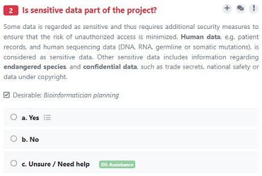
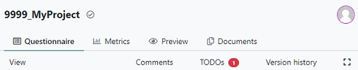
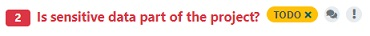
Back to TopCreate an output document
When the questions are answered you can create a document with your answers, and download it to your computer.
- Click on
Documentsin the navigation bar at the top of the page. - Click on the
New documentbutton. - By default the document template is
SMS checklist Phase 1. There are two other document templates available, one which will output Phase 2 questions and answers, and one that will output both phases. Click on the template if you wish to change into one of the other templates. - The default document format is
MS Word Document, but you can select any of the other formats as well. - Click
Create - To inspect the resulting document, click on the three vertical dots to the left of
the document and select
Downloadin the appearing menu.
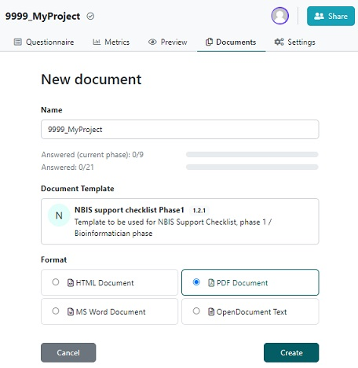
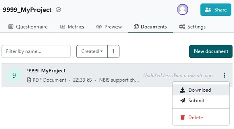
Back to TopHow to collaborate
There might be situations where you want others to have access to your checklist:
- Collaborators in the project need to answer some questions
- A stakeholder, such as the Researcher, want to view the answers
Share in the
top right corner of the navigation bar.There are two ways to open up the checklist for sharing, either by adding specific users or by activating a public link.

Add users
Click in the field
Add users and start typing the name of the person you
want to share with (requires an account at the DS Wizard). Select this user from the
resulting list of names, and then select the role you want this person to have (Viewer,
Editor, Owner).Public link
If you want to share the checklist with people who don't have an account in DS Wizard, you can make a public link instead of adding users.
Activate the
Public link and select if you want the person(s) with the link to
view or edit. Now you can copy the link in the address bar (e.g.
999_MyProject)
and share with whomever you want, without them having to log in.
Click on
Save.Add comment
It is possible to add comments by clicking on the bubble icon next to a question, adding a comment and then click on the
Comment button.As in other tools, where adding comments are possible, one can reply, mark as solved, or delete.
Back to TopOutdated project
When we update a template, you will get an update available tag next to the name of your
project, to make you aware that you are not working with the latest version of the template.

You don't have to do anything, but hopefully the updates have an improved value,
with new questions or better guidance. In order to make the project up-to-date, you can use
the Create Migration function.
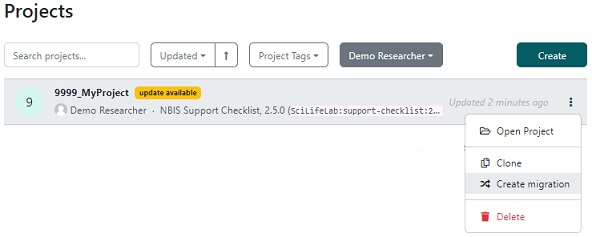
First step
In the first dialogue window, select the highest version number as New Version and click on Create.Note: The outdated version will remain unchanged until you specifically delete it, these steps will create an updated copy. Unless you really do want to keep the outdated version, we recommend that the outdated version is deleted after the migration is finalized. If you do keep the outdated version, we recommend that you deactivate the
Share >> Public link in order to prevent that a collaborator continues to
work in the outdated version instead of in the new one.
Second step
A window with the differences between the versions appear. The left panel displays an overview with the type of difference for each question, whether it is a new or a changed one.In the right panel the detailed difference is displayed. Highlighted in yellow is the current change you need to approve of by clicking on Resolve in the top right corner.
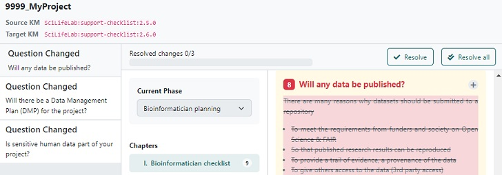
Third step
When all changes have been resolved, an option to Finalize Migration will become visible in the top right corner, click on it to finish the update. This will open the updated project, so that you can see if there are new questions to be answered.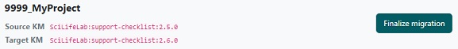
Back to TopCreate a copy
If you want to have different versions of the checklist, e.g. one version when applying for
support, one version during the project, and one version at the end of the project, this is
possible using the Clone function:
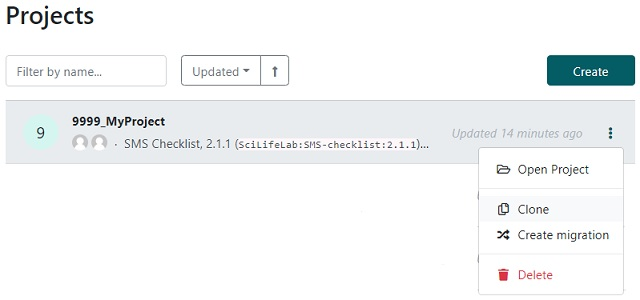
The clone will get the prefix 'Copy of ' as name (e.g. 'Copy of 999_MyProject').
To change the name, click on it to open it, then click on Settings in the
navigation bar at the top. Change the name (and possibly other settings, like adding a description) and click on
Save.
Back to Top
Get help
If something is not working correctly with the tool, please click on Help in the
left-hand menu (at the bottom), then on Report issue.
If you want to give feedback on a specific question (e.g. more/better guidance, fix typo),
click on the ! sign at that question.
If you need help answering a question, you are most welcome to send an email either to
the data steward assigned to your project or to data@nbis.se.
Back to Top